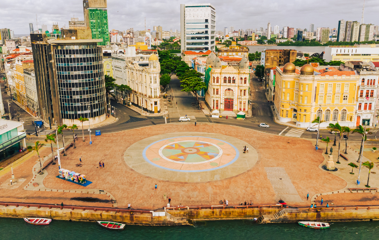

Marco Zero é o ponto central da cidade do Recife, onde a cidade foi oficialmente fundada.

Além de ser um marco histórico, o local também é conhecido pelas suas atrações culturais e artísticas.

O Marco Zero está localizado no bairro do Recife Antigo, sendo um dos principais pontos turísticos da cidade.
